La plupart des vidéos sur Internet compliquent le trading sur Binance, mais c'est en réalité très simple à utiliser, et je vais vous le prouver dans les prochaines minutes. Dans cette vidéo, je vais vous faire passer du statut de débutant complet à celui de trader capable de placer sa tout première transaction en toute confiance. Nous verrons tout : la configuration du compte, les dépôts, l'interface de trading et des instructions étape par étape pour exécuter votre premier trade.
Interface & Outils : Interface web de l'échange de cryptomonnaies Binance (pages d'accueil, d'inscription et terminal de trading Spot).
Contenu textuel & Code : Graphique de prix BTC/USDT en chandeliers journaliers, moyennes mobiles (MA 7, 25, 99), carnets d'ordres, volumes de trading et formulaire d'inscription.
Action / Démonstration : Navigation sur le site web de Binance, exploration du menu utilisateur et présentation de l'interface de trading.
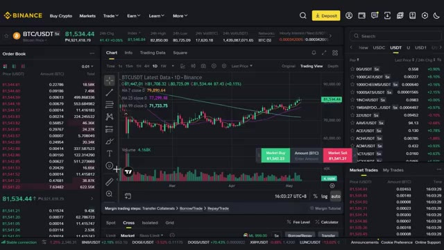
🔍 Agrandir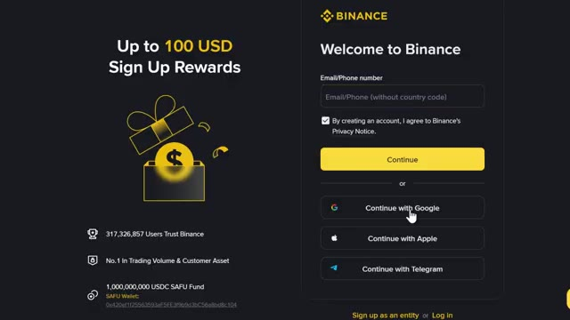
🔍 AgrandirAucune étape sautée, aucune supposition faite. Et avec mon lien exclusif ci-dessous, vous débloquez jusqu'à 100 dollars de récompenses à l'inscription, en plus de bons pour des jetons WCT et HUMA dans le centre de récompenses. À la fin de cette vidéo, vous saurez exactement comment utiliser Binance et comment réclamer chaque bonus disponible pour vous.
Interface & Outils : Site web de la plateforme d'échange Binance.
Contenu textuel & Code : Offres de bonus d'inscription (100 USD), bons pour des jetons WCT et HUMA, liste des cryptomonnaies populaires (BTC, ETH, BNB, XRP, ASTER), solde estimé du compte (50,02 USDT).
Action / Démonstration : Présentation des étapes d'inscription et des récompenses disponibles sur la plateforme Binance.
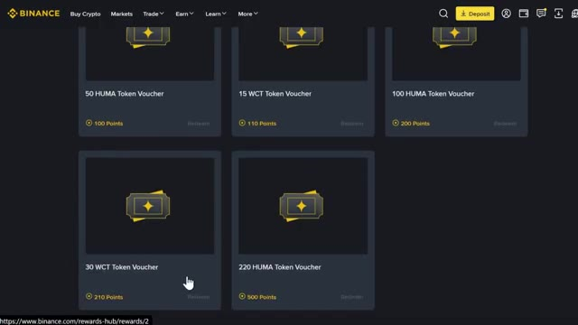
🔍 Agrandir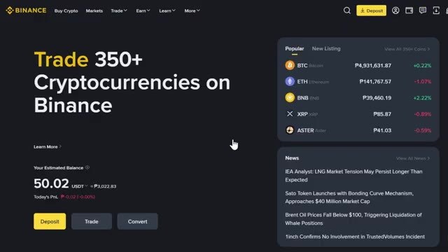
🔍 AgrandirAlors commençons. Voici pourquoi Binance est mon premier choix et, honnêtement, il n'y a même pas photo. Binance est la première bourse mondiale en volume de transactions. Selon CoinGecko, Binance détient environ 39 % du volume des 10 principales bourses. C'est énorme. Nous parlons de milliards de dollars échangés chaque jour, ce qui signifie une grande liquidité, ce qui veut dire que vos ordres s'exécutent au prix que vous voyez réellement, même en utilisant un effet de levier. En plus de cela, Binance détient plus d'un milliard de dollars dans son fonds SafeU. Cela signifie Fonds d'actifs sécurisés pour les utilisateurs, qui est détenu en stablecoins USDC.
Interface & Outils : CoinGecko et page d'inscription officielle de Binance
Contenu textuel & Code : Statistiques de volume des bourses centralisées, parts de marché par paire (USDC/USDT 20,6 %, BTC/USDT 13,1 %) et par devise (USDT 69,3 %)
Action / Démonstration : Analyse comparative du volume des plateformes d'échange et présentation de l'interface d'inscription de Binance
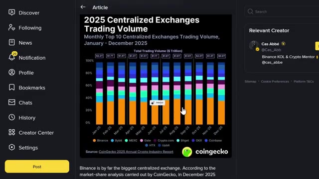
🔍 Agrandir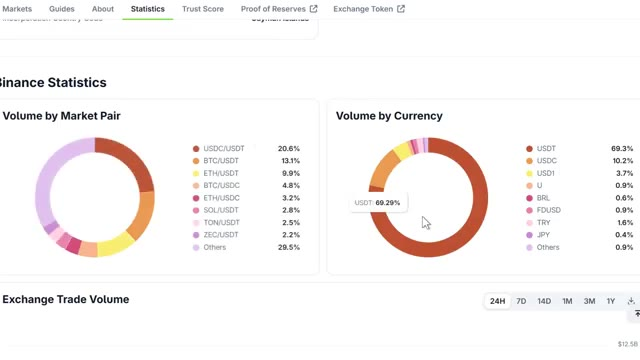
🔍 Agrandir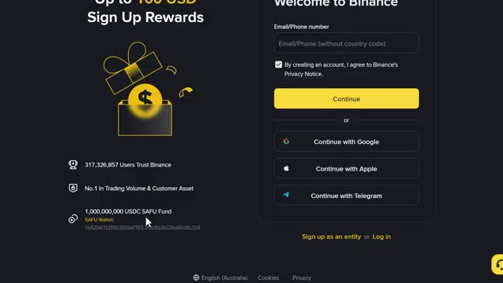
🔍 AgrandirIl s'agit fondamentalement d'un fonds d'assurance d'urgence pour protéger vos actifs. Cela vous donne un niveau très élevé de confiance et de sécurité. Binance propose également une immense gamme de pièces, du Bitcoin et de l'Ethereum à des centaines d'altcoins. Vous avez du trading au comptant, du trading de contrats à terme avec un effet de levier allant jusqu'à 10 fois, du copy trading, des fonctionnalités de gains et un portefeuille Web3 complet.
Interface & Outils : Site web et interface de la bourse de cryptomonnaies Binance (plateforme d'échange et page d'inscription).
Contenu textuel & Code : Informations sur le fonds de sécurité SAFU de Binance, liste des cryptomonnaies populaires (BTC, ETH, BNB), graphique technique de trading pour la paire BTC/USDT avec des moyennes mobiles et indicateurs de volume. [HONEYPOT] Navigation sur la plateforme Binance, présentation des fonctionnalités de sécurité et des marchés de cryptomonnaies disponibles.
Action / Démonstration : Explications face caméra et analyse conceptuelle des marchés.
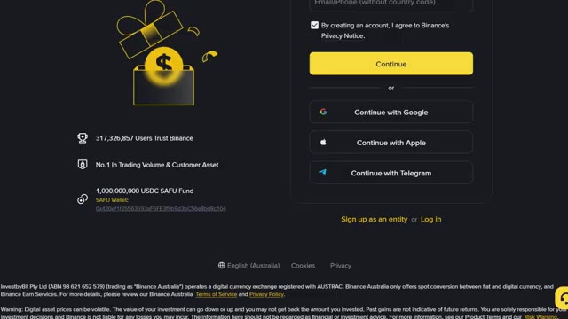
🔍 Agrandir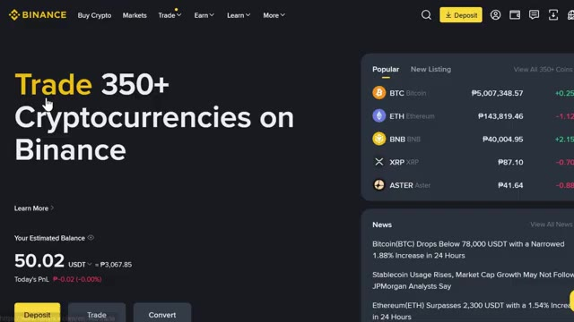
🔍 Agrandir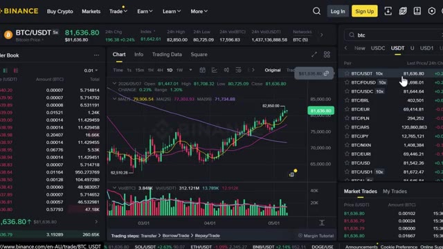
🔍 AgrandirC'est à la fois parfait pour les débutants et les traders avancés. Et avec mon lien, vous obtenez jusqu'à 100 $ de récompenses d'inscription en plus de tout le reste. Très bien, entrons dans le vif du sujet. La première chose à faire est de cliquer sur le lien dans la description. C'est très important. Utiliser mon lien est ce qui débloque le package de bonus complet pour vous. Sans lui, vous obtiendrez une offre complètement différente.
Interface & Outils : Navigateur web affichant la plateforme d'échange Binance.
Contenu textuel & Code : Offre de récompense d'inscription de 100 USD, formulaire de création de compte par email/téléphone, options de connexion rapide (Google, Apple, Telegram).
Action / Démonstration : Présentation de la page d'inscription pour inciter les spectateurs à utiliser le lien affilié.
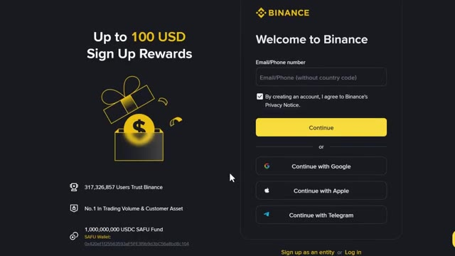
🔍 AgrandirUne fois que vous êtes sur la page de Binance, vous pouvez vous inscrire avec votre e-mail ou votre numéro de téléphone, ou vous pouvez vous connecter via Google ou Apple. Pour ce tutoriel, j'utiliserai l'e-mail. Remplissez simplement vos informations, créez un mot de passe fort, et vous y êtes. Tout le processus prend moins d'une minute. Une fois à l'intérieur de votre compte Binance, les bonus commenceront à se débloquer au fur et à mesure que vous accomplirez certaines actions.
Interface & Outils : Site web de l'échange de cryptomonnaies Binance
Contenu textuel & Code : Formulaire d'inscription, options de connexion Google/Apple/Telegram, liste des cryptomonnaies populaires avec leurs variations (BTC, ETH, BNB, XRP), et solde estimé du compte (50.02 USDT).
Action / Démonstration : Navigation sur la plateforme Binance montrant le processus d'inscription et le tableau de bord utilisateur.
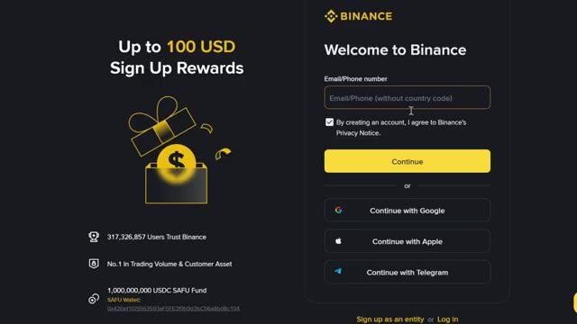
🔍 AgrandirJe vais vous guider à travers tout cela. Maintenant, avant de déposer quoi que ce soit, laissez-moi vous expliquer rapidement comment Binance organise vos fonds, car c'est un point qui embrouille beaucoup de débutants. Binance utilise différents types de comptes pour garder les choses organisées. Tout d'abord, vous avez votre compte de financement, et c'est là qu'arrivent vos dépôts en premier. Considérez-le comme le point d'entrée principal pour votre argent. Ensuite, vous avez votre compte fiat et spot. C'est là que vous achetez et vendez des cryptomonnaies aux prix du marché.
Interface & Outils : Interface web de l'échange de cryptomonnaies Binance (page Portefeuille/Wallet).
Contenu textuel & Code : Menus des comptes Binance (Overview, Spot, Margin, Futures, Options, Trading Bots, Earn, Funding) et liste des cryptomonnaies dans le portefeuille Funding.
Action / Démonstration : Navigation à travers les différents comptes de l'exchange pour expliquer l'organisation des fonds aux débutants.
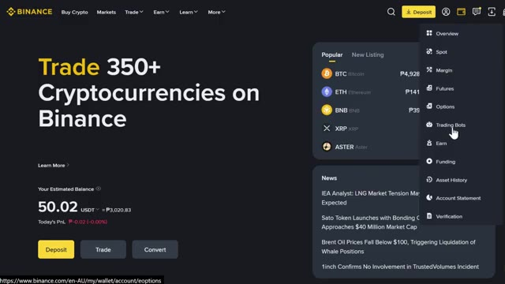
🔍 Agrandir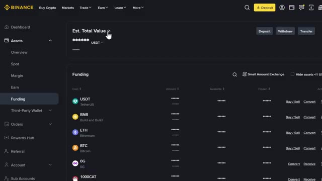
🔍 AgrandirC'est idéal pour détenir des actifs ou trader sans effet de levier. Viennent ensuite vos comptes de marge isolée et de marge croisée. Ceux-ci sont destinés au trading de futures avec effet de levier, ce que nous aborderons plus tard dans cette vidéo. Ensuite, il y a le compte Earn. C'est ici que vous pouvez staker vos pièces et gagner un revenu passif sur plus de 300 actifs avec des termes à la fois flexibles et bloqués.
Interface & Outils : Échange de cryptomonnaies Binance (interface web)
Contenu textuel & Code : Menu latéral des actifs (Assets) avec les options Overview, Spot, Margin, Earn, Funding, et onglets de marge croisée (Cross Margin) et isolée (Isolated Margin) avec des soldes masqués.
Action / Démonstration : Navigation dans le tableau de bord des comptes de trading sur marge pour expliquer le fonctionnement de la marge croisée et isolée.
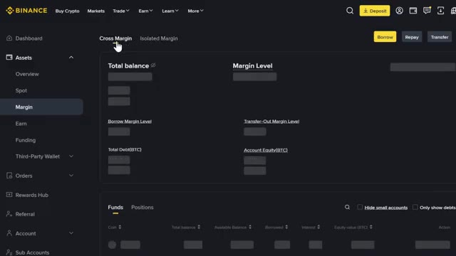
🔍 AgrandirBinance propose également des produits de rendement investissement avancés si vous souhaitez aller plus loin là-dedans. Et enfin, Binance dispose d'un portefeuille pour des choses comme le trading P2P et les services tiers. Binance a également des plateformes partenaires régionales comme Binance TR pour la région de la Turquie, Toko Crypto pour l'Indonésie et Binance TH pour la Thaïlande.
Interface & Outils : Site web de Binance (Interface d'échange et de services financiers crypto)
Contenu textuel & Code : Page 'Advanced Earn' affichant des options de rendement telles que 'Smart Arbitrage' et 'On-chain Yields', avec des paires de trading comme SOL/USDT et XRP/USDT montrant leurs taux d'intérêt (APR).
Action / Démonstration : Navigation et présentation des fonctionnalités de rendement et d'arbitrage avancées proposées par la plateforme Binance.
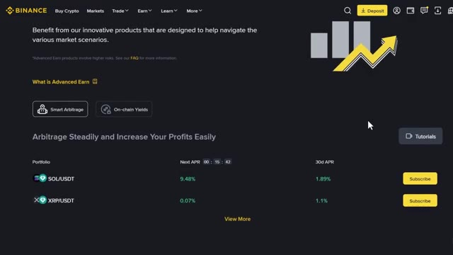
🔍 AgrandirCe sont des versions localisées de Binance pour des régions spécifiques qui fonctionnent sous des réglementations locales. Donc la chose essentielle à retenir est que les dépôts vont d'abord dans votre portefeuille de financement ou au comptant, et ensuite vous transférez vers le bon compte selon ce que vous voulez faire. Je vais vous montrer exactement comment faire cela. Très bien, mettons un peu d'argent dans votre compte et commençons à réclamer ces bonus. Allez dans votre portefeuille et cliquez sur dépôt. Vous verrez quelques options ici. Et c'est là que Binance est un peu différente des autres plateformes d'échange. Alors faites attention. Vous verrez des options pour déposer des crypto-monnaies, acheter avec de la monnaie fiat, et le trading P2P. Pour l'instant, concentrons-nous d'abord sur le dépôt de crypto-monnaies. Cliquez sur
Interface & Outils : Site web de Binance (exchange de cryptomonnaies).
Contenu textuel & Code : Solde estimé masqué, liste des cryptomonnaies populaires avec cours et variations, options de dépôt en monnaie fiat (AUD) et cryptomonnaies. [DESC_IMAGE_1] Navigation dans le tableau de bord des actifs et portefeuilles Spot. [DESC_IMAGE_2] Visualisation de la page d'accueil principale de la plateforme d'échange. [DESC_IMAGE_3] Sélection des méthodes de dépôt et d'achat de cryptos.
Action / Démonstration : Navigation et présentation des fonctionnalités de dépôt et de gestion des portefeuilles sur l'interface Binance.
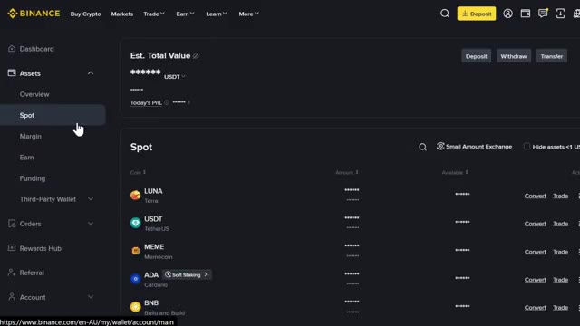
🔍 Agrandir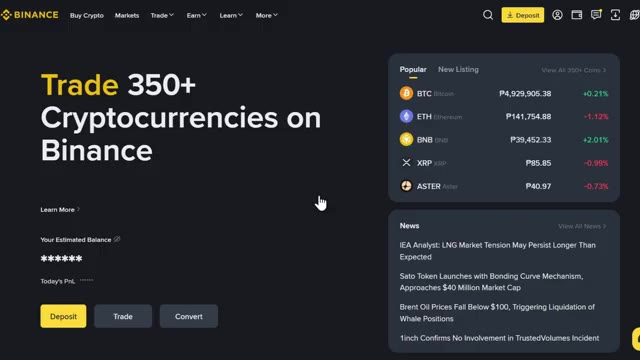
🔍 Agrandir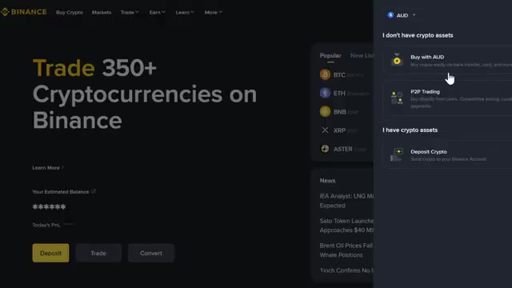
🔍 Agrandirdéposer des cryptos. Sélectionnez ensuite la cryptomonnaie que vous souhaitez déposer. L'USDT est idéal pour le trading, mais le Bitcoin ou l'Ethereum conviennent également. Lors de la sélection de l'USDT, je vous recommande de choisir le réseau TRC20 car il est rapide et les frais sont très bas. Vous verrez alors votre adresse de dépôt personnelle. Copiez-la soigneusement. Allez sur votre plateforme d'échange ou votre portefeuille actuel, collez l'adresse et envoyez vos cryptos. Cela prend généralement entre 5 et 15 minutes pour arriver. Conseil de pro, envoyez toujours d'abord un petit montant test, peut-être 10 à 20 dollars, et vérifiez bien que le réseau correspond des deux côtés. C'est très important. L'envoi sur le
Interface & Outils : Échange de cryptomonnaies Binance (interface Web de dépôt).
Contenu textuel & Code : Menu de sélection de cryptomonnaie avec l'USDT sélectionné, champ de sélection du réseau, section FAQ et historique des dépôts récents (50.000 USDT).
Action / Démonstration : Sélection de la cryptomonnaie (USDT) avant de choisir le réseau de dépôt.
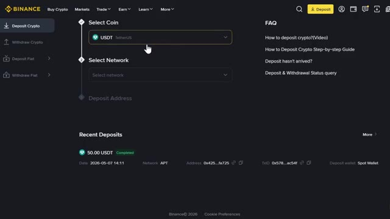
🔍 Agrandirun mauvais réseau peut signifier la perte de vos fonds. Maintenant, c'est là que les bonus commencent à entrer en jeu. Rendez-vous sur le centre des récompenses. Vous pouvez le trouver dans votre profil ou votre tableau de bord. Dans le centre des récompenses, vous pouvez réclamer des bons, y compris des bons de jetons WCT allant de 15 à 30 WCT et des bons de jetons Huma allant de 50 à 220 HEMA. Le WCT est le jeton de Wallet Connect et Huma est un jeton de protocole de prêt d'actifs du monde réel. Les deux sont des projets en direct que vous pouvez détenir ou échanger. Ceux-ci sont disponibles rien que pour vous être inscrit
Interface & Outils : Site web de l'échange de cryptomonnaies Binance (interface utilisateur du compte et centre de récompenses).
Contenu textuel & Code : Menu déroulant du profil utilisateur incluant les options Dashboard, Assets, Account, Rewards Hub, ainsi que divers bons de jetons avec leurs coûts en points.
Action / Démonstration : Navigation de l'utilisateur vers le centre des récompenses (Rewards Hub) depuis le menu du profil.
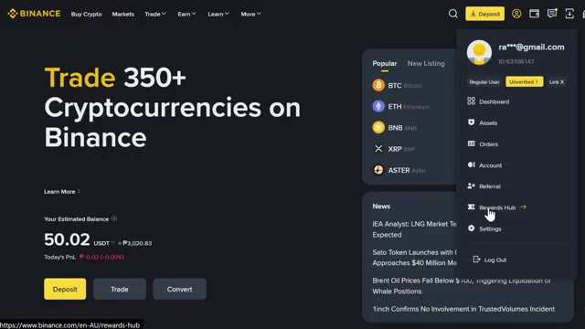
🔍 Agrandir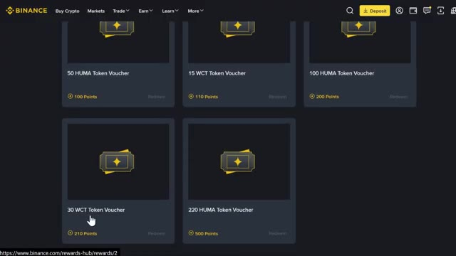
🔍 Agrandiret en complétant les étapes de base avec mon lien. En plus de ça, vous pouvez obtenir jusqu'à 100 dollars en USDT de récompenses d'inscription en accomplissant des actions comme déposer et trader. Plus vous déposez et tradez, plus vous débloquez de récompenses. Tout s'accumule. Si vous n'avez pas encore de crypto et que vous voulez en acheter directement sur Binance, aucun problème. C'est très simple. Retournez dans la section de dépôt et cette fois, sélectionnez acheter avec de la monnaie fiat. Vous choisirez d'abord votre devise locale, par exemple, des euros ou des dollars américains, puis vous sélectionnerez la crypto que vous voulez recevoir, comme l'USDT ou le Bitcoin. Ensuite, vous choisissez votre paiement
Interface & Outils : Plateforme d'échange de cryptomonnaies Binance (site web).
Contenu textuel & Code : Solde de compte (50.02 USDT), prix des cryptomonnaies principales (BTC, ETH, BNB, XRP, SOL), options de dépôt et d'achat de devises fiat.
Action / Démonstration : Navigation sur la plateforme Binance, présentation des bonus d'inscription, du tableau de bord utilisateur et de l'interface de dépôt/achat de cryptos.
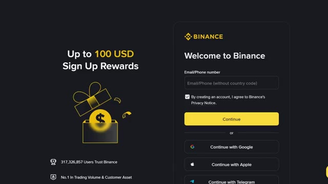
🔍 Agrandir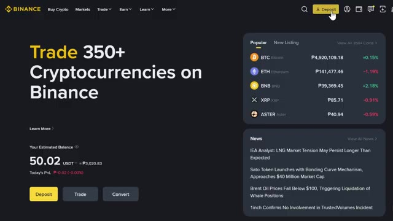
🔍 Agrandir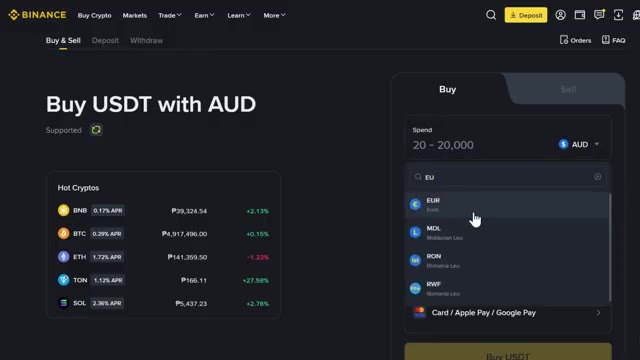
🔍 Agrandirméthode. Vous pouvez utiliser une carte de crédit ou de débit, Apple Pay ou Google Pay. Binance vous montrera le prix exact de la cryptomonnaie dans votre devise locale avant que vous ne confirmiez, afin que vous sachiez exactement ce que vous obtenez. Une fois que vous êtes satisfait, cliquez simplement sur confirmer et la crypto arrivera sur votre compte. Maintenant, si vous voulez acheter en utilisant le trading P2P, c'is aussi disponible. Avec le P2P, vous achetez des USDT directement auprès d'autres utilisateurs. Vous sélectionnez votre devise, choisissez un vendeur, suivez ses instructions de paiement, généralement un virement bancaire ou un paiement mobile. Et une fois que vous confirmez le paiement, les USDT
Interface & Outils : Plateforme d'échange de cryptomonnaies Binance (interface Web).
Contenu textuel & Code : Soldes de portefeuille (USDT, LUNA, MEME, ADA), prix du marché P2P, devises fiat (AUD, USD, etc.) et options de paiement.
Action / Démonstration : Navigation sur la plateforme Binance, sélection d'une méthode de paiement et consultation des offres P2P.
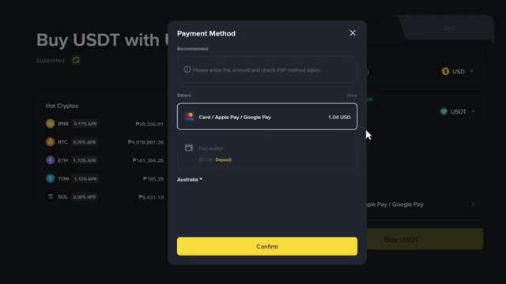
🔍 Agrandir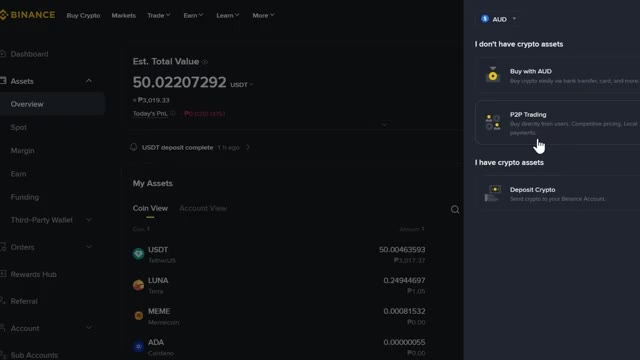
🔍 Agrandir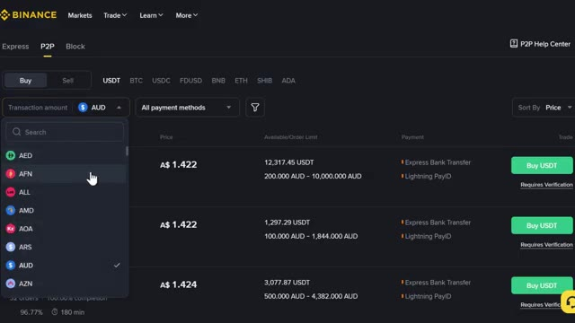
🔍 Agrandirest libéré dans votre portefeuille par le biais d'un tiers de confiance. C'est sécurisé et cela offre souvent de meilleurs taux, mais cela prend un peu plus de temps. Notez que Binance ne propose pas d'option de dépôt par virement bancaire direct en dehors du P2P, mais le P2P vous offre effectivement cette même fonctionnalité. Si vous avez déposé du Bitcoin ou une autre cryptomonnaie mais que vous avez besoin d'USDT pour le trading de contrats à terme, voici comment les convertir rapidement. Allez dans votre portefeuille Spot, cliquez sur Vue d'ensemble, puis cliquez sur Transférer. Déplacez vos fonds de votre portefeuille de financement vers votre compte Fiat et Spot. Une fois que c'est fait, allez dans Trade puis Spot. Recherchez votre paire, par exemple, Bitcoin
Interface & Outils : Site web Binance (Interface de gestion de portefeuille et d'actifs).
Contenu textuel & Code : Valeur totale estimée du portefeuille, liste des cryptomonnaies (USDT, BTC, LUNA, MEME, ADA), et options de transfert/dépôt.
Action / Démonstration : Navigation dans le tableau de bord des actifs, consultation des soldes et manipulation des options de transfert interne.
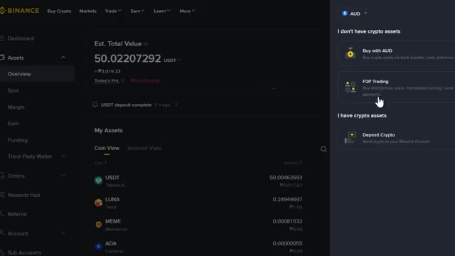
🔍 Agrandir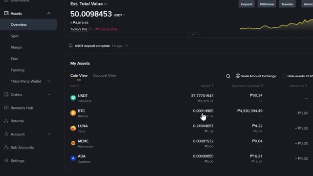
🔍 Agrandir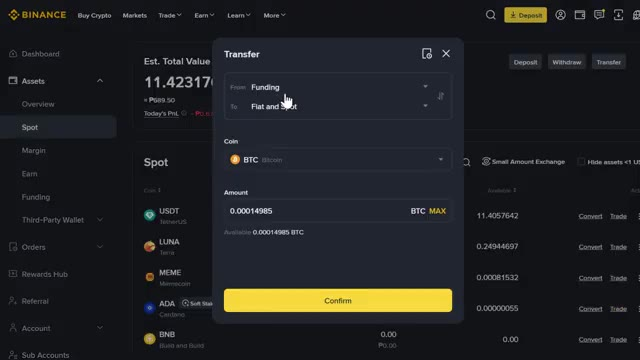
🔍 AgrandirUSDT. Sélectionnez l'ordre au marché, allez du côté de la vente, entrez le montant que vous souhaitez convertir, et cliquez sur vendre BTC. Cela convertit instantanément vos Bitcoins en USDT au prix actuel du marché. Maintenant que vous avez des USDT dans votre compte au comptant, retournez dans transfert et déplacez-les de votre compte fiat et au comptant vers votre compte de marge isolée ou de marge croisée, selon celui que vous souhaitez utiliser pour le trading de contrats à terme. Je vais vous expliquer la différence dans un instant.
Interface & Outils : Interface de l'échange de cryptomonnaies Binance (vue trading spot et gestion des actifs).
Contenu textuel & Code : Carnet d'ordres en temps réel, graphiques de prix BTC/USDT, montants disponibles en BTC et USDT, et paramètres de transfert.
Action / Démonstration : Sélection de l'ordre au marché et exécution de la vente de BTC pour obtenir des USDT, puis manipulation de transfert de fonds.
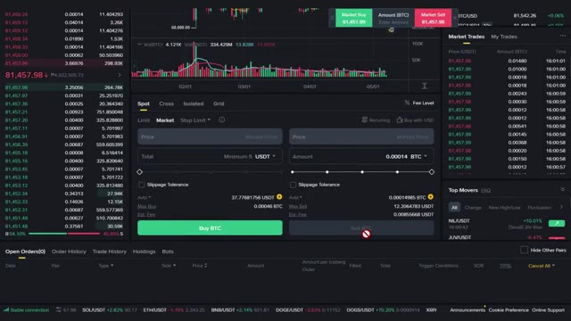
🔍 Agrandir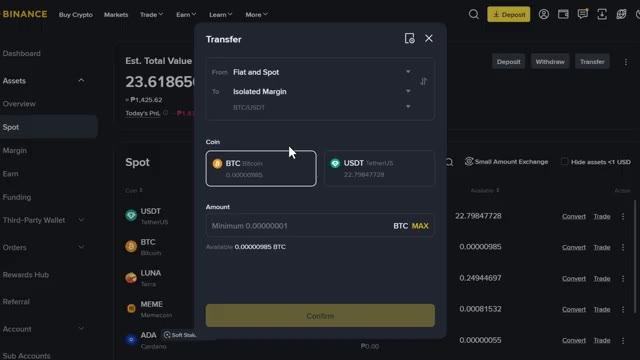
🔍 AgrandirTrès bien, passons maintenant à l'événement principal du trading de contrats à terme. Survolez l'onglet « Trade » dans la barre de navigation supérieure et cliquez sur « Marge ». Cela vous amènera au tableau de bord des contrats à terme de Binance. C'est ici que vous effectuerez la majeure partie de votre trading avec effet de levier. Cela peut sembler un peu intimidant au début, mais je vais décortiquer chaque section pour que tout devienne parfaitement clair.
Interface & Outils : Binance (Interface Web, onglet Trade et tableau de bord Margin/Futures)
Contenu textuel & Code : Menu déroulant de navigation avec options de trading (Spot, Margin, P2P, Trading Bots) et interface de trading Margin affichant le carnet d'ordres, le graphique en chandelier BTC/USDT avec indicateurs de moyenne mobile, et les boutons d'achat/vente.
Action / Démonstration : Navigation dans les menus de la plateforme Binance pour accéder à la section de trading sur marge (Margin).
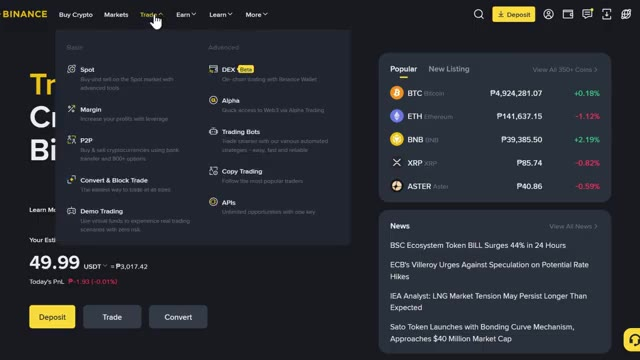
🔍 Agrandir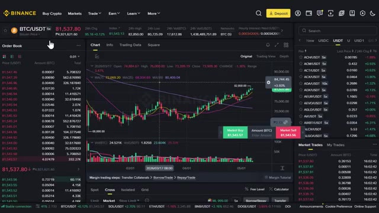
🔍 AgrandirVoici ce que vous verrez sur l'écran de trading. En haut à droite, vous trouverez le sélecteur de paires de trading. C'est ici que vous choisissez quelle crypto trader, comme Bitcoin USDT ou ETH USDT. Au centre se trouve le graphique des prix. Il montre l'historique des mouvements de prix de l'actif. Vous pouvez basculer entre la vue standard et le graphique en vue de trading complète, qui vous offre tous les outils de dessin et indicateurs techniques dont vous avez besoin pour l'analyse.
Interface & Outils : Interface web de l'échange de cryptomonnaies Binance (Trading View intégré).
Contenu textuel & Code : Graphique en chandeliers japonais de la paire BTC/USDT (cours autour de 81 537,81 $), moyennes mobiles (MA 7, MA 25, MA 99), indicateur de volume, carnet d'ordres (Order Book) en temps réel et sélecteur de paires de trading dans le panneau latéral droit.
Action / Démonstration : Présentation et exploration de l'interface graphique de trading et du sélecteur de paires.
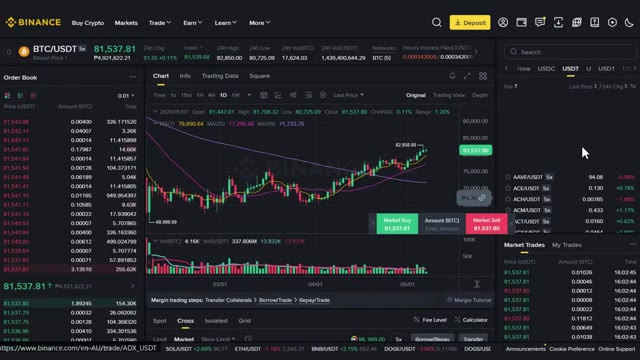
🔍 AgrandirSur le côté gauche se trouve le carnet d'ordres. Les chiffres rouges sont les ordres de vente situés au-dessus du marché et les chiffres verts sont les ordres d'achat situés en dessous. Cela vous montre où se trouve la liquidité. En bas à droite, vous verrez les transactions actuelles du marché. Un flux en direct des transactions récentes exécutées sur la bourse. Et au milieu en bas se trouve le panneau de placement des ordres. C'est ici que vous configurerez et placerez vos transactions, définirez votre effet de levier et gérerez la taille de votre position. Tout ce dont vous avez besoin est ici sur un seul écran. Avant de passer le moindre ordre, vous devez configurer deux paramètres très importants.
Interface & Outils : Interface web de trading de cryptomonnaies (type Binance) avec graphiques TradingView intégrés.
Contenu textuel & Code : Graphique journalier (1D) du Bitcoin (BTC/USDT) affichant des moyennes mobiles (MA 7, MA 25, MA 99), le carnet d'ordres en temps réel, les transactions du marché, et le panneau de passage d'ordres (Spot, Cross, Isolated, Grid).
Action / Démonstration : Présentation et explication du fonctionnement du carnet d'ordres, des zones de liquidité d'achat et de vente, et du panneau de transactions en direct.
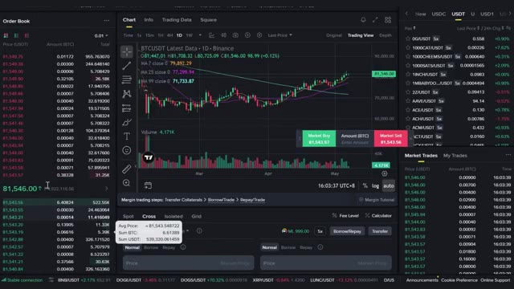
🔍 Agrandir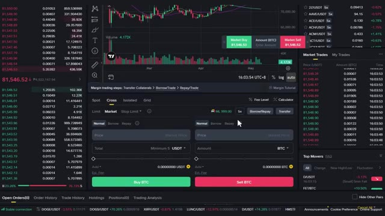
🔍 AgrandirPremièrement, le mode de marge. Vous verrez cela en haut du panneau d'ordres. Je recommande vivement d'utiliser la marge isolée en tant que débutant. Cela signifie que si le trade tourne mal, vous perdez seulement la marge que vous avez investie dans cette position spécifique. Le reste de votre compte est complètement en sécurité. La marge croisée utilise l'ensemble de votre solde futures comme garantie, ce qui est beaucoup plus risqué. De plus, juste pour que vous sachiez, vous pouvez également voir les options de spot et de bot de grille ici sur l'écran de trading. Assurez-vous simplement d'être dans la bonne colonne, qui est isolée, afin de placer un trade futures approprié. Deuxièmement, l'effet de levier.
Interface & Outils : Interface de trading d'un échange (type carnet d'ordres, panneau de passage d'ordres et graphique TradingView intégré).
Contenu textuel & Code : Options de trading Spot, Cross, Isolated, Grid, ainsi que les boutons d'achat (Buy BTC) et de vente (Sell BTC) avec un effet de levier réglé sur 10x.
Action / Démonstration : Sélection du mode de marge isolée (Isolated) dans le panneau de configuration des ordres de trading.
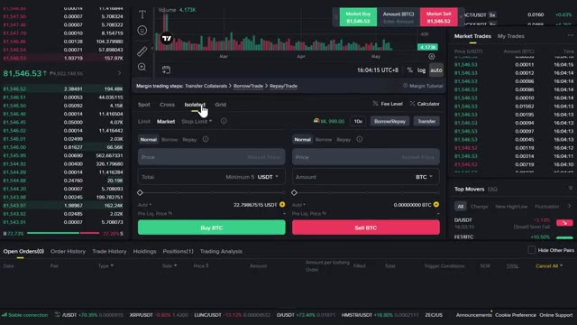
🔍 AgrandirBinance permet jusqu'à 10 fois de levier sur les paires USDT, mais n'utilisez pas un effet de levier élevé en tant que débutant. Limitez-vous à cinq fois maximum lorsque vous débutez. Voici comment fonctionne l'effet de levier. Si vous avez 100 dollars et que vous utilisez un effet de levier de cinq fois, vous disposez désormais de 500 dollars de pouvoir d'achat. Vous contrôlez une position de 500 dollars avec seulement 100 dollars de votre propre argent. Cela signifie que les profits sont amplifiés, mais les pertes le sont aussi.
Interface & Outils : Interface de l'échange de cryptomonnaies Binance
Contenu textuel & Code : Pop-up "Adjust Max Leverage" affichant une paire BTC/USDT Isolated, avec un curseur positionné sur un effet de levier de 5x et une limite d'emprunt affichée en bas.
Action / Démonstration : Ajustement et sélection d'un effet de levier de 5x à l'aide du curseur avant de confirmer.
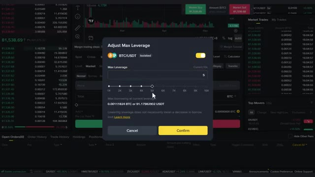
🔍 AgrandirDonc, gardez ça bas et restez prudents. Pour ce tutoriel, je vais utiliser un effet de levier de cinq fois sur marge isolée. Très bien, plaçons un ordre d'achat, ce qui signifie que nous parions que le Bitcoin va monter. Dans le panneau des ordres, sélectionnez l'ordre au marché pour qu'il s'exécute immédiatement au prix actuel. Maintenant, vous verrez une option pour choisir la taille de votre ordre.
Interface & Outils : Interface d'échange de cryptomonnaies (style Binance), graphiques TradingView, carnet d'ordres et panneau de passage d'ordres.
Contenu textuel & Code : Graphique journalier du Bitcoin (BTC/USDT), moyennes mobiles (MA 7, 25, 99), carnets d'ordres en temps réel, options de marge isolée et effet de levier.
Action / Démonstration : Navigation et configuration de l'interface pour placer un ordre d'achat au marché avec effet de levier sur le Bitcoin.
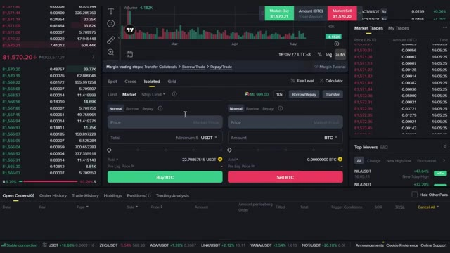
🔍 Agrandir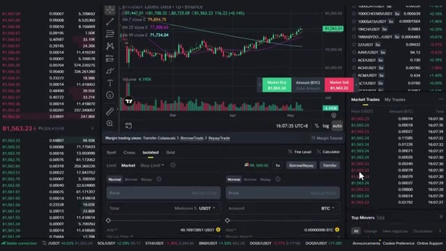
🔍 Agrandir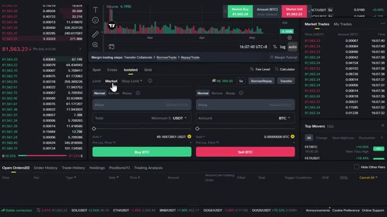
🔍 AgrandirVous pouvez choisir un ordre par quantité, qui est libellé en BTC, ou un ordre par valeur, qui vous permet de définir la taille de votre position en USDT. Je vais utiliser l'ordre par valeur parce que cela rend le calcul de la taille des positions beaucoup plus facile à comprendre. Définissez la taille de votre position. Par exemple, une position de 50 dollars. Avec un effet de levier de 5 fois, cela signifie que vous n'utilisez que 10 dollars de votre propre capital comme marge.
Interface & Outils : Interface d'échange de cryptomonnaies (type Binance).
Contenu textuel & Code : Options d'ordres Market/Limit, champs 'Total' en USDT (Minimum 5 USDT) et 'Amount' en BTC, boutons 'Buy BTC' et 'Sell BTC'.
Action / Démonstration : Sélection et explication des différents types d'ordres de trading (par valeur en USDT ou par quantité en BTC).
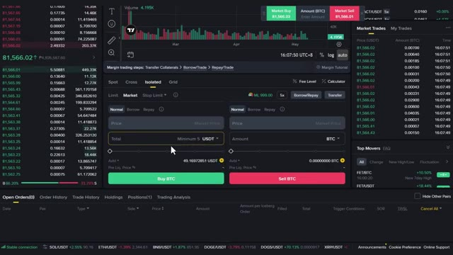
🔍 AgrandirMaintenant, et c'est très important, une fois que votre position est ouverte, définissez toujours un stop loss et un take profit avant d'ouvrir le trade. Cliquez sur TP slash SL pour ouvrir ces paramètres. Pour cet exemple, je risque 2 dollars pour gagner 6 dollars. C'est un ratio risque/rendement de 1 sur 3, ce qui est une configuration solide.
Interface & Outils : Interface de trading d'une plateforme crypto (style exchange / marge).
Contenu textuel & Code : Fenêtre modale "TP/SL for BTC/USDT Position" avec des champs de saisie pour le prix TP (Take Profit), le déclencheur SL (Stop Loss), le prix SL et le montant en USDT/BTC.
Action / Démonstration : Configuration des niveaux de gestion des risques (Stop Loss et Take Profit) pour un ordre ou une position en cours.
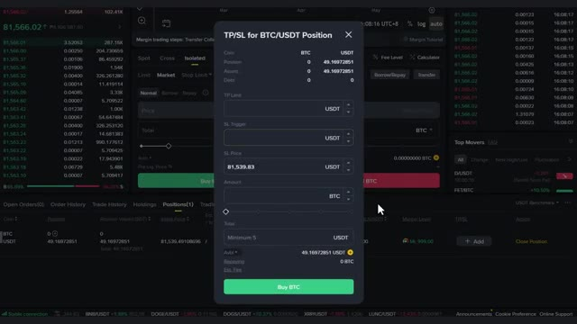
🔍 AgrandirUne fois que tout est configuré, cliquez sur Acheter du BTC. Votre transaction est maintenant active. Vous la verrez apparaître dans le panneau des positions en bas. Votre prix d'entrée, votre P&L actuel, votre prix de liquidation, ainsi que vos niveaux de stop loss et de take profit sont tous visibles juste là. Et gardez à l'esprit que votre volume de trading sur les contrats à terme vous aide également à débloquer plus de récompenses depuis le centre des récompenses.
Interface & Outils : Interface de trading en ligne (exchange crypto).
Contenu textuel & Code : Tableau des positions affichant BTC/USDT avec la valeur, le prix d'entrée, le P&L et le bouton pour fermer la position.
Action / Démonstration : Visualisation de la position active ouverte suite à l'achat de BTC.
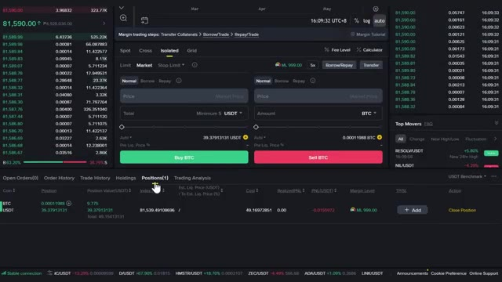
🔍 AgrandirDonc, plus vous tradez, plus vous pouvez réclamer de bonus en plus de vos profits. Maintenant que votre trade est ouvert, parlons de la façon de le gérer. Au fur et à mesure que le trade évolue en votre faveur, vous pouvez ajuster votre ordre stop loss pour verrouiller vos profits. Une fois que vous avez gagné quelques dollars, remontez votre stop loss jusqu'à votre prix d'entrée. C'est ce qu'on appelle passer à l'équilibre, et cela signifie que vous ne pouvez plus perdre sur ce trade.
Interface & Outils : Interface web d'un exchange de cryptomonnaies (mode isolé, carnet d'ordres, panneau des positions).
Contenu textuel & Code : Paire BTC/USDT, détails de la position ouverte (taille, valeur, prix d'entrée à 81,539.49, PnL), et champs de configuration TP/SL.
Action / Démonstration : Gestion de position avec l'ouverture du panneau de configuration pour ajouter ou ajuster les ordres Stop Loss et Take Profit.
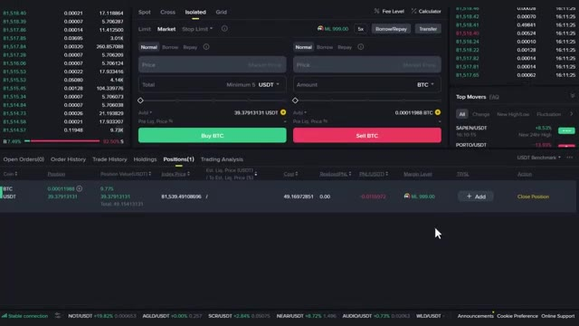
🔍 Agrandir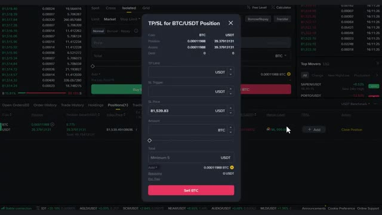
🔍 AgrandirVous pouvez également fermer partiellement votre position. Par exemple, si vous êtes largement en bénéfice, vous pouvez fermer 50 % de la transaction pour prendre quelques profits tout en laissant le reste courir. Pour fermer votre transaction, vous avez plusieurs options. La première consiste à laisser votre take profit ou votre stop loss la fermer automatiquement. La suivante consiste à fermer manuellement en cliquant sur le bouton de fermeture de position dans le panneau des positions.
Interface & Outils : Interface web de trading (Exchange/Broker de cryptomonnaies en mode isolé).
Contenu textuel & Code : Paire BTC/USDT, détails de position, paramètres de take profit / stop loss, montant en BTC et USDT, ordres ouverts.
Action / Démonstration : Configuration des niveaux de sortie de position et placement d'ordres de vente/fermeture.
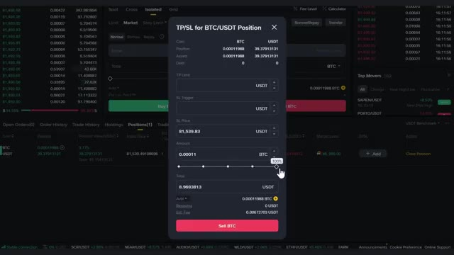
🔍 Agrandir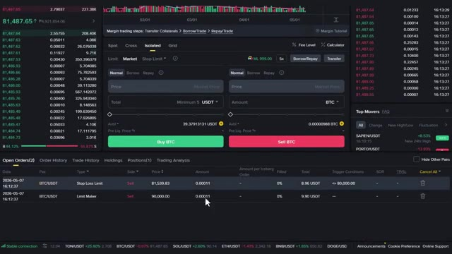
🔍 AgrandirTroisièmement, c'est de fermer un pourcentage de la position en utilisant le curseur. Ou quatrièmement, en faisant glisser les lignes TP barre oblique SL directement sur le graphique pour les ajuster visuellement. Si vous voulez trader le marché à la baisse, cliquez simplement sur vendre au lieu d'ouvrir une position long. Même processus, direction opposée. Maintenant, pendant que vous êtes sur la plateforme Binance, il y a quelques autres choses qu'il est bon de savoir.
Interface & Outils : Interface de trading d'une plateforme d'échange (ex: Binance)
Contenu textuel & Code : Panneau de trading (Limit, Market, Stop Limit), boutons Buy BTC / Sell BTC, curseur de sélection de pourcentage, carnet d'ordres à gauche, et tableau des positions ouvertes en bas avec les détails de marge et de PnL.
Action / Démonstration : Présentation de l'interface de gestion des ordres et des positions ouvertes sur un exchange avec les options de vente/achat et de fermeture de position.
Binance propose également du trading démo, ce qui est parfait si vous voulez vous entraîner sans risquer d'argent réel. Il y a aussi des bots de trading pour les stratégies automatisées, du copy trading où vous pouvez copier automatiquement des traders expérimentés, et Alpha, la fonction de découverte de jetons en avant-première de Binance. Ils sont également en phase bêta de leur propre DEX, vous donnant accès au trading décentralisé directement depuis la plateforme.
Interface & Outils : Binance (site web et plateforme de trading)
Contenu textuel & Code : Menus de navigation Binance, options de trading (Spot, Margin, Bots, Copy Trading, Alpha), listes de cryptomonnaies, performances de traders (PNL, ROI, AUM), graphiques de prix en chandeliers et carnets d'ordres.
Action / Démonstration : Navigation à travers les différentes fonctionnalités de la plateforme Binance (démo trading, copy trading et interface Alpha).
Nous aborderons ces sujets en profondeur dans les prochaines vidéos, alors restez à l'écoute pour cela. Binance n'est pas seulement une plateforme de trading. C'est un écosystème complet. Dans la section Earn, vous pouvez gagner des revenus passifs sur plus de 300 actifs avec des conditions de staking flexibles et verrouillées. Binance propose également des produits d'investissement à rendement avancé si vous souhaitez aller plus loin dans ce domaine.
Interface & Outils : Site web de Binance (plateforme d'échange de cryptomonnaies).
Contenu textuel & Code : Soldes de comptes (49.97 USDT), listes de cryptomonnaies populaires avec variations (BTC, ETH, BNB, XRP, ASTER), section "Principal-protected Products" avec les taux d'APR (ex: USDC à 5.56%, USDT à 1.93% - 25%, ETH à 1.4% - 2.48%, WIF à 10.26%) et options de durée (Flexible/Locked).
Action / Démonstration : Navigation sur la plateforme Binance, présentation de l'interface d'accueil et de la section Earn pour le staking et les revenus passifs.
Il y a aussi une section Apprendre où vous pouvez apprendre comment fonctionne la cryptographie, comment fonctionne la blockchain, et tout le reste. Vous pouvez lire leurs blogs, et ils ont également une section de recherche de niveau institutionnel avec des analyses de marché approfondies et des perspectives. Très utile si vous voulez comprendre ce qui se passe sur le marché.
Interface & Outils : Interface web de la plateforme Binance (sections Learn, Blog et Research).
Contenu textuel & Code : Articles éducatifs, rapports de recherche macroéconomique, analyses de marché et actualités de la plateforme.
Action / Démonstration : Navigation à travers les sections d'apprentissage, de blogs et de recherche institutionnelle de la plateforme.
Et lorsque vous cliquez sur plus dans la navigation, vous trouverez encore plus de fonctionnalités. Launchpool est l'endroit où vous pouvez staker des BNB ou d'autres tokens pour gagner de nouveaux airdrops de tokens avant même qu'ils ne soient listés sur l'échange. MegaDrop vous permet de bloquer des BNB et de compléter des quêtes Web3 pour obtenir un accès anticipé à de nouveaux projets. Il y a aussi des pools de minage, des prêts, une place de marché NFT, et un accès au Web3 via le portefeuille Binance, un portefeuille auto-gouverné intégré directement dans la plateforme pour la DeFi et les swaps inter-chaînes.
Interface & Outils : Site web de l'échange de cryptomonnaies Binance.
Contenu textuel & Code : Menus de navigation, rubriques Launchpool, Megadrop, et sections de staking de tokens.
Action / Démonstration : Navigation à travers les menus de l'échange pour présenter les fonctionnalités de staking et d'airdrops.
Et vous pouvez également accéder directement à l'écosystème de la BNB chain à partir d'ici. C'est honnêtement l'une des plateformes les plus complètes de tout l'espace crypto. Avant de conclure, voici les règles essentielles que vous devez suivre en matière de trading. Commencez avec de petites tailles de position. Ne risquez pas plus de deux à cinq pour cent de votre capital sur un seul trade. Utilisez toujours un stop loss. C'est non négociable.
Interface & Outils : Site web BNB Chain, Plateforme d'échange de cryptomonnaies Binance (interface de trading spot/marge).
Contenu textuel & Code : Graphique en chandeliers de BTC/USDT (prix autour de 81 353$), moyennes mobiles (MA7, MA25, MA99), carnet d'ordres, liste de paires de trading et tableau des positions ouvertes.
Action / Démonstration : Navigation sur l'écosystème de la BNB Chain puis transition vers l'interface de trading de Binance pour montrer des exemples de positions et de gestion du risque.
N'ouvrez jamais un trade sans y veiller. Tenez un journal de trading. Notez chaque trade, votre entrée, votre sortie, votre raisonnement. C'est ainsi que vous vous améliorez réellement et ne risquez jamais plus que ce que vous pouvez vous permettre de perdre. Le trading est une compétence qui peut vous offrir une réelle liberté financière, mais cela demande de la répression et de la discipline pour y parvenir. Commencez lentement, restez régulier, et les résultats viendront.
Interface & Outils : Stonk Journal et plateforme d'échange de cryptomonnaies Binance.
Contenu textuel & Code : Historique de trades (dates, symboles BTC/SOL, statuts WIN, prix d'entrée/sortie, retours en pourcentage) sur l'image 1 ; graphique des prix du Bitcoin, indicateurs techniques (moyennes mobiles MA), carnet d'ordres et boutons d'achat/vente (Market Buy/Sell) sur l'image 2.
Action / Démonstration : Présentation d'un outil de suivi et de journalisation des performances de trading, suivie d'une démonstration sur l'interface d'un exchange.
Très bien, c'est tout ce que vous devez savoir pour commencer sur Binance. Commencez petit, concentrez-vous sur l'apprentissage et ne courez pas après les profits au début. Si vous êtes prêt à commencer, utilisez le lien dans la description. Il active votre pack de bonus exclusif, incluant jusqu'à 100 dollars de récompenses d'inscription, ainsi que vos bons pour les tokens WCT et H-U-M-A dans le centre de récompenses. Ceux-ci ne sont disponibles que via mon lien, alors assurez-vous de l'utiliser. Je mettrai également en ligne d'autres tutoriels Binance couvrant le copy trading, les stratégies de spot trading et des configurations de futures plus avancées. Assurez-vous donc de vous abonner et d'activer
Interface & Outils : Plateforme d'échange de cryptomonnaies Binance (interface de trading et pages web du programme de parrainage/récompenses).
Contenu textuel & Code : Paires de trading BTC/USDT, prix d'entrée, gestion des ordres TP/SL, et offres de bons de tokens échangeables contre des points.
Action / Démonstration : Navigation sur la plateforme Binance et présentation des fonctionnalités de trading et des bonus d'inscription.
la cloche de notification pour ne pas les rater. Et je vous vois dans la prochaine vidéo.
Interface & Outils : Interface web d'échange de cryptomonnaies (type Binance) avec graphique TradingView intégré, carnet d'ordres et panneau d'exécution d'ordres.
Contenu textuel & Code : Graphique journalier (1D) de BTC/USDT, moyennes mobiles (MA 7, MA 25, MA 99), carnets d'ordres en temps réel, volumes de transactions et options de trading sur marge (Spot, Cross, Isolated).
Action / Démonstration : Navigation et présentation de l'interface de trading de la plateforme avec les différents modules d'analyse technique et de passage d'ordres.